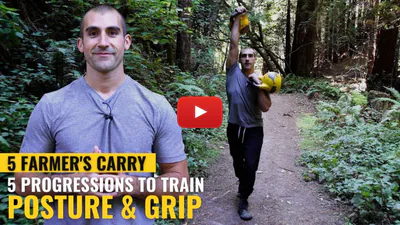

B617 · 5 Farmer's Carry Progressions to TRAIN Posture & Grip
Hi {first_name},
There is a concept of being "farm-boy" strong.
You may not have known this, but growing up I spent a good deal of time hanging around garbage men, stone fabricators, and farmers and what I can tell you is the type of strength they possess will shock you. Their grip, back strength, and insane work capacity I continue to have massive respect for.
One thing I learned from spending time with them is that getting strong can certainly come from things other than loading plates onto the bar.
In today’s video, you’ll see 5 variations of the classic farmer’s carry. To get legit benefits, you do not have to go as heavy as possible. In fact, I challenge you to try these progressions with a lighter to moderate load and go for a longer time/distance.
Challenge your ability to maintain good posture - especially when fatigued.
Watch this week’s video now and get farmer-strong!
 I hope you enjoy this one and keep training intentionally, Mike Salemi |